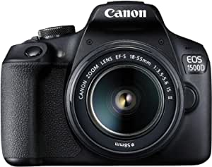

Electronics
Depending on See:Wild Life how you obtained the Windows software, this is a license agreement between (i) you and the device manufacturer or software installer that distributes the software with your device; or (ii) you and Microsoft Corporation (or, based on where you live or, if a business, where your principal place of business is located, one of its affiliates) if you acquired the software from a retailer. Microsoft is the device manufacturer for devices produced by Microsoft or one of its affiliates, and Microsoft is the retailer if you acquired the software directly from Microsoft. Note that if you are a volume license customer, use of this software is subject to your volume license agreement rather than this agreement.
Depending on how you obtained the Windows software, this is a license agreement between (i) you and the device manufacturer or software installer that distributes the software with your device; or (ii) you and Microsoft Corporation (or, based on where you live or, if a business, where your principal place of business is located, one of its affiliates) if you acquired the software from a retailer. Microsoft is the device manufacturer for devices produced by Microsoft or one of its affiliates, and Microsoft is the retailer if you acquired the software directly from Microsoft. Note that if you are a volume license customer, use of this software is subject to your volume license agreement rather than this agreement.
Depending on how you obtained the Windows software, this is a license agreement between (i) you and the device manufacturer or software installer that distributes the software with your device; or (ii) you and Microsoft Corporation (or, based on where you live or, if a business, where your principal place of business is located, one of its affiliates) if you acquired the software from a retailer. Microsoft is the device manufacturer for devices produced by Microsoft or one of its affiliates, and Microsoft is the retailer if you acquired the software directly from Microsoft. Note that if you are a volume license customer, use of this software is subject to your volume license agreement rather than this agreement.